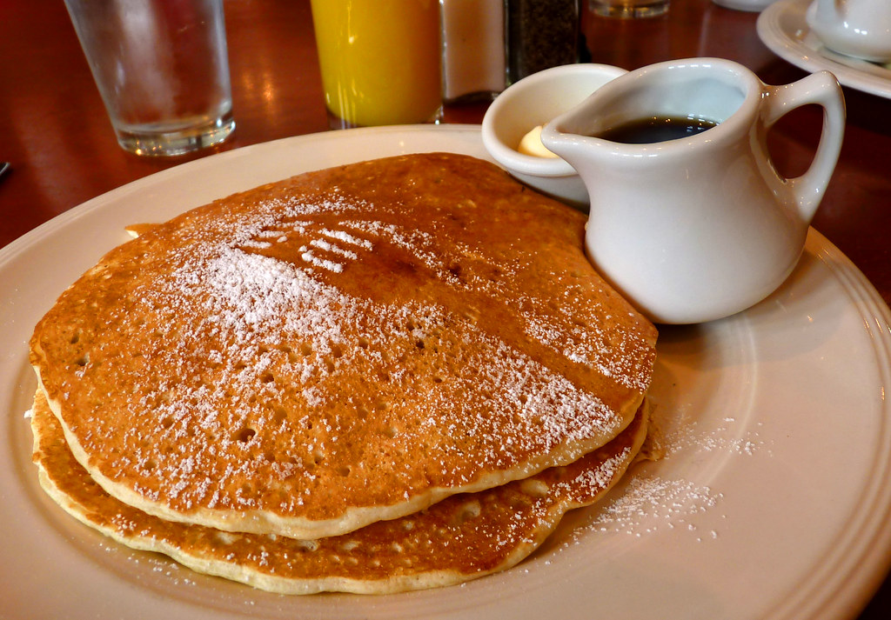

Pancakes

Thick, fluffy, and all-around delicious pancakes with just a few ingredients.
Ingredients
- Dry
- 1 ½ cups all-purpose flour
- 3 ½ teaspoons baking powder
- 1 tablespoon white sugar
- ¼ teaspoon salt, or more to taste
- Wet
- 1 ¼ cups milk
- 3 tablespoons butter, melted
- 1 egg
Steps
- Sift the dry ingredients together.
- Make a well, then add the wet ingredients. Stir to combine.
- Scoop the batter onto a hot griddle or pan.
- Cook for two to three minutes, then flip.
- Continue cooking until brown on both sides.